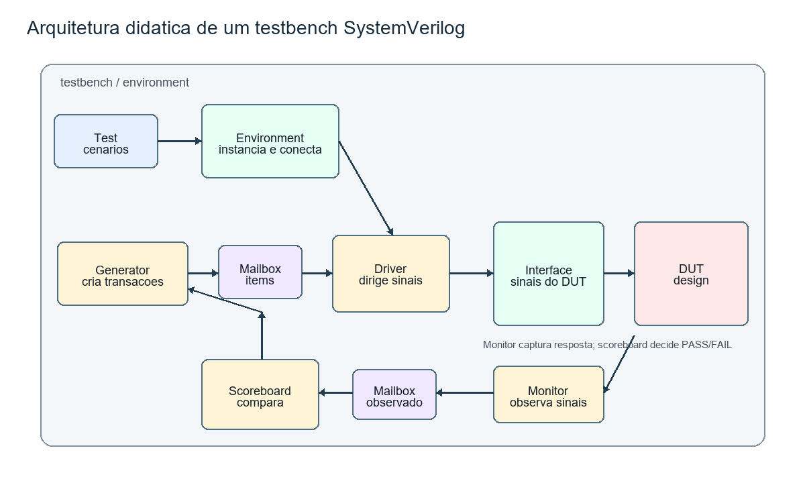
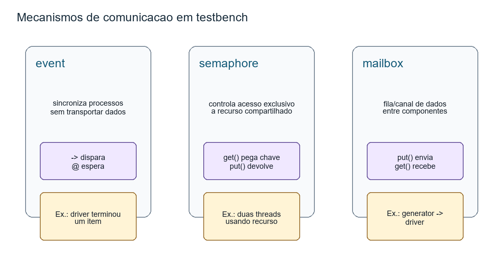

A virada mental
Em RTL, a pergunta principal é: que hardware este código descreve? Em verificação, a pergunta muda: como eu provo que esse hardware se comporta como deveria? Essa diferença parece pequena, mas muda toda a arquitetura do código.
Um testbench fraco apenas força sinais nas entradas e deixa o aluno olhando waveform. Um testbench melhor cria estímulos, aplica esses estímulos com um protocolo correto, observa as saídas, compara com uma expectativa e emite erro quando algo não bate. É isso que a aula começa a montar.
Arquitetura de testbench
O bloco mais importante da aula é este fluxo. Ele aparece nos slides por meio de classes
como test, environment, generator, driver,
monitor e scoreboard. Em vez de decorar cada classe isolada,
enxergue a cadeia completa:

A separação por componentes evita um erro muito comum: escrever um testbench gigante em um
único initial begin. Esse estilo até funciona em exercícios pequenos, mas fica
difícil de reutilizar, debugar e ampliar. Quando cada componente tem uma responsabilidade,
o ambiente cresce de forma mais controlada.
Test
Escolhe o cenário. Ele cria o ambiente e manda rodar uma configuração de teste.
Environment
É o container. Instancia componentes, cria canais de comunicação e conecta tudo.
Generator
Cria transações abstratas, muitas vezes randomizadas, e envia ao driver.
Driver
Transforma a transação em sinais reais no protocolo do DUT.
Monitor
Observa sinais do DUT e reconstrói o que realmente aconteceu.
Scoreboard
Compara observado contra esperado. Sem ele, a verificação ainda depende muito de waveform.
Transação: o objeto que carrega intenção
O slide mostra uma classe de item/transação. Uma transação é uma operação em nível mais alto
que os sinais individuais. Em vez de o generator pensar em vld, addr,
data e ciclos de clock, ele pensa em “uma escrita”, “uma leitura”, “um pacote”,
“um comando” ou “um item”.
class switch_item;
rand bit [7:0] addr;
rand bit [15:0] data;
endclass
O modificador rand indica que esses campos podem ser randomizados. Isso é essencial
em verificação porque o objetivo não é testar apenas um caso bonito, mas explorar muitas combinações
de entrada. Mesmo que este bloco ainda não aprofunde constraints, ele já prepara a ideia:
o generator cria itens e o restante do testbench sabe como aplicá-los.
Generator e driver
O generator cria a massa de estímulos. O driver consome essa massa e conversa com o DUT. Nos quizzes, essa diferença aparece como push e pop: o generator coloca itens na mailbox; o driver retira itens dela.
task generator_run();
repeat (num_transactions) begin
item = new();
assert(item.randomize());
drv_mbx.put(item); // generator empurra para a mailbox
@(drv_done); // espera o driver terminar
end
endtasktask driver_run();
forever begin
drv_mbx.get(item); // driver retira da mailbox
vif.vld <= 1'b1;
vif.addr <= item.addr;
vif.data <= item.data;
@(posedge vif.clk);
vif.vld <= 1'b0;
-> drv_done; // avisa que terminou
end
endtask
Repare que o driver usa uma virtual interface, geralmente chamada de
vif. A interface real existe no topo do testbench, conectada ao DUT.
A classe driver não é um módulo; ela não tem portas físicas. Por isso recebe uma referência
virtual para conseguir ler e escrever sinais.
Event, semaphore e mailbox
Os slides colocam três mecanismos lado a lado, mas eles resolvem problemas diferentes. O erro conceitual comum é tratar todos como “canais”. Não são.

Event
Um event é um sinal de sincronização no testbench. Ele não carrega dado.
Ele apenas permite que uma thread diga a outra: “isso aconteceu”.
event drv_done;
// Dispara o evento
-> drv_done;
// Espera o evento acontecer
@(drv_done);
O operador -> é o gatilho do evento. Se o quiz pergunta o que dispara
um evento criado, a resposta é exatamente esse operador.
Semaphore
Um semaphore controla acesso a recurso compartilhado. Pense nele como um conjunto
de chaves. Se há uma chave, só uma thread entra por vez; se há três chaves, até três threads
podem entrar simultaneamente. Isso é diferente de transportar dados.
semaphore token;
initial begin
token = new(1); // uma chave: exclusão mútua
end
task use_shared_resource();
token.get(1); // pega a chave
// região crítica: usa o recurso compartilhado
token.put(1); // devolve a chave
endtaskPor isso o quiz marca como falsa a ideia de que componentes acessam dados compartilhados por um canal dedicado usando semaphore. O semaphore não é o canal de dados; ele é a trava.
Mailbox
A mailbox é uma fila de comunicação entre threads/classes. Ela é o mecanismo natural
para passar transações do generator para o driver e do monitor para o scoreboard.
mailbox #(switch_item) drv_mbx;
initial begin
drv_mbx = new();
end
// Producer
drv_mbx.put(item);
// Consumer
drv_mbx.get(item);Loops em verificação
Os slides listam forever, repeat, while,
for, do while e foreach. A parte importante não é
memorizar a sintaxe isolada, mas reconhecer o padrão de uso em testbench.
| Loop | Uso típico em verificação | Exemplo mental |
|---|---|---|
forever | Processos permanentes. | Driver e monitor rodando enquanto a simulação vive. |
repeat | Número fixo de estímulos. | Gerar 100 transações. |
foreach | Percorrer arrays. | Verificar todas as entradas de uma tabela esperada. |
while | Condição dinâmica. | Rodar enquanto ainda houver pacotes pendentes. |
forever begin
mon_mbx.get(observed);
scoreboard_check(observed);
end
foreach (expected_by_addr[addr]) begin
$display("addr=%0h expected=%0h", addr, expected_by_addr[addr]);
endArrays, queues e métodos úteis
SystemVerilog dá ao testbench estruturas de dados bem mais ricas que Verilog clássico. Isso importa porque verificação lida com listas de transações, memórias esperadas, logs, filas e buscas.
int static_array[10]; // tamanho fixo
int dynamic_array[]; // tamanho definido em runtime
int expected_by_addr[int]; // associative array indexado por inteiro
switch_item pending[$]; // queue de transaçõesEm RTL sintetizável, você normalmente prefere tamanhos definidos e estruturas inferíveis. Em testbench, a flexibilidade é uma virtude: uma queue pode crescer conforme chegam transações; um associative array pode guardar o valor esperado por endereço sem modelar uma memória física completa.
O papel do with
O slide de quiz diz que find_last() exige with, enquanto
max() não exige. A razão é simples: métodos de busca precisam saber
qual condição define o item procurado.
int values[] = '{4, 7, 2, 5, 7, 1, 6, 3, 1};
int result[$];
result = values.find_last(x) with (x < 3);
Leia assim: “procure o último elemento x do array tal que x < 3”.
Sem o with, faltaria a pergunta: último que satisfaz o quê?
int maximum[$];
maximum = values.max();
Já max() tem o critério embutido: maior valor. Ele não precisa de uma cláusula
para saber o que procurar.
Scoreboard: transformar simulação em veredito
O scoreboard é a diferença entre “simulei” e “verifiquei”. Ele recebe o comportamento observado e compara com uma regra esperada. Para o exemplo de switch dos slides, a regra pode ser: endereços de uma faixa saem pela porta A; os demais saem pela porta B.
task scoreboard_run();
forever begin
scb_mbx.get(item);
if (item.addr inside {[8'h00:8'h3f]}) begin
if (item.addr_a !== item.addr || item.data_a !== item.data)
$error("Mismatch na porta A");
end else begin
if (item.addr_b !== item.addr || item.data_b !== item.data)
$error("Mismatch na porta B");
end
end
endtask
O operador !== é importante em verificação porque compara também valores
desconhecidos ou alta impedância. Usar apenas != pode mascarar problemas com
X e Z, justamente os valores que muitas vezes denunciam reset incompleto,
conexão faltando ou lógica não inicializada.
Top, interface e DUT
O testbench_top costuma ser o único lugar que parece mais “hardware”: ele instancia
a interface real, o DUT e o test. As classes usam referências, mas a conexão física dos sinais
acontece no topo.
module testbench_top;
bit clk;
always #5 clk = ~clk;
switch_if sif(clk);
switch dut (
.clk (clk),
.rstn (sif.rstn),
.vld (sif.vld),
.addr (sif.addr),
.data (sif.data)
);
initial begin
test t0 = new();
t0.e0.vif = sif;
t0.run();
end
endmoduleEsse padrão explica por que o ambiente separa tanto arquivos de RTL, interface e testbench. O DUT deveria continuar independente do test. O testbench é quem o envolve, aplica estímulo e mede resultado.
Quizzes explicados
->
O evento é disparado com -> nome_do_evento;. Quem espera usa @(nome_do_evento).
Pushes.
O generator produz transações e coloca na mailbox com put.
Pops.
O driver consome transações da mailbox com get.
False.
Semaphore controla acesso a recurso. Canal de dados entre componentes é papel típico da mailbox.
with?”
find_last().
Métodos de busca precisam de critério. max() já possui critério embutido.
Como isso ajuda no projeto
Quando formos explorar o ambiente do professor, este bloco ajuda a ler a pasta de testbench
com menos “ruído”. Se aparecer mailbox, procure produtor e consumidor.
Se aparecer event, procure quem dispara e quem espera. Se aparecer
virtual interface, procure onde a interface real foi conectada. Se aparecer
scoreboard, procure a regra de comparação.
- Generator cria estímulos em forma de objeto.
- Mailbox transporta esses objetos entre componentes.
- Driver converte objeto em protocolo de sinais.
- Monitor observa o DUT sem interferir.
- Scoreboard compara comportamento observado com comportamento esperado.
- Loops, queues e associative arrays são ferramentas de organização do testbench, não necessariamente hardware sintetizável.
Generator -> Mailbox -> Driver -> Interface -> DUT -> Monitor -> Mailbox -> Scoreboard.
Se esse fluxo estiver claro, os códigos longos dos slides viram uma arquitetura compreensível.
Base Markdown: aula didática, texto extraído, cobertura slide a slide.